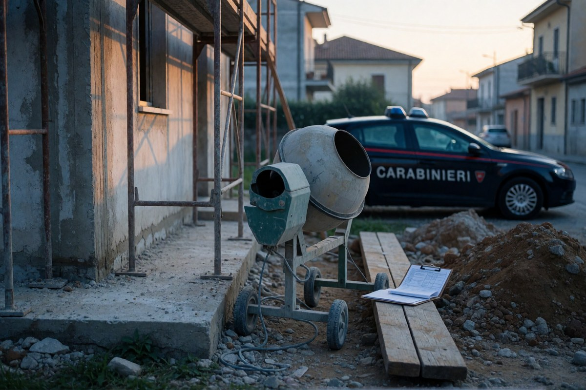

Mafia e antimafia · 16 novembre 2026
Modugno, stipendi finti in un'impresa edile per ripulire i soldi della droga

Diciannove arresti fra Modugno, Bitonto e Altamura. Per la Dda di Bari il gruppo, vicino al clan Capriati, pagava buste paga fittizie per giustificare gli incassi dello spaccio.
di Franco Zanghì
Stipendi, buste paga, un'impresa edile. Non è la descrizione di un'azienda: secondo la Direzione distrettuale antimafia di Bari è il modo in cui un gruppo dello spaccio avrebbe ripulito i soldi della droga. Lunedì 16 novembre i carabinieri hanno eseguito un'ordinanza del giudice per le indagini preliminari di Bari, chiesta dalla Dda: 14 persone in carcere, 5 ai domiciliari e, per una ventesima, una misura meno grave.
Le piazze e le accuse
Le piazze dello spaccio, secondo l'accusa, erano tre: Modugno, Bitonto e Altamura. Cocaina, hashish e marijuana, gestite da un gruppo che per gli inquirenti è vicino al clan Capriati di Bari. Le contestazioni, a vario titolo, sono quattro: associazione finalizzata al traffico di stupefacenti, detenzione e porto abusivo di armi da guerra, autoriciclaggio e una tentata estorsione aggravata dal metodo mafioso.
Come funzionava, secondo gli inquirenti
Al vertice, chi fissava i prezzi delle dosi e le paghe. Sotto, i capi area, che organizzavano le piazze e tenevano il libro mastro degli incassi. A chi veniva arrestato, raccontano le testate locali, il gruppo garantiva assistenza legale ed economica. Poi c'è l'impresa: i soldi della droga, per gli investigatori, venivano reinvestiti nell'edilizia attraverso una società che assumeva persone del gruppo e pagava stipendi fittizi, in modo da giustificare i guadagni. Il procuratore aggiunto della Dda di Bari, Giuseppe Gatti, in conferenza stampa ha parlato di una mafia imprenditoriale.
Un dettaglio riguarda chi comprava la droga. Secondo quanto spiegato in conferenza stampa dal procuratore aggiunto Francesco Giannella, la cocaina veniva tagliata con la creatina e trattata con uno spray acrilico per aumentarne il peso a scapito della qualità, facendola sembrare pura.
Gli indagati sono da considerarsi innocenti fino a sentenza definitiva: il procedimento è nella fase delle indagini preliminari e finora non risultano dichiarazioni pubbliche delle difese.
Il punto
Diciannove arresti e una rete dello spaccio organizzata come un'azienda, con le paghe, i capi area e un'impresa edile per far tornare i conti. Ora la parola passa ai giudici. Ma il pezzo di indagine che pesa di più non è quello sulle dosi: è quello sulle buste paga. Perché un gruppo che trasforma il contante in lavoro regolare non si limita a vendere droga in un quartiere, entra nel mercato di tutti.
Fonti
- ANSA, l'operazione dei carabinieri di Bari con 19 misure cautelari, 16 novembre 2026
- Telebari, la conferenza stampa della Dda di Bari, 16 novembre 2026
- L'Edicola del Sud, la ricostruzione delle tre piazze di spaccio, 16 novembre 2026
- Senza Colonne News, le dichiarazioni dei procuratori aggiunti Gatti e Giannella, 16 novembre 2026
- TeleRama News, l'impresa edile e gli stipendi fittizi, 16 novembre 2026
Questo articolo nasce dalla pagina Gli Eroi dell'Abisso, dove la stessa storia è raccontata in video.